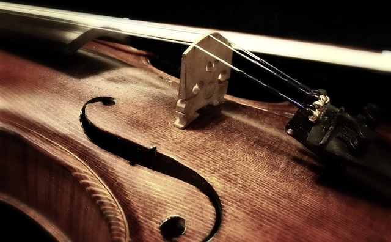
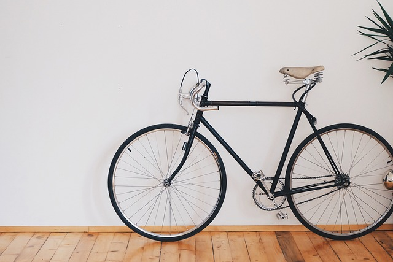
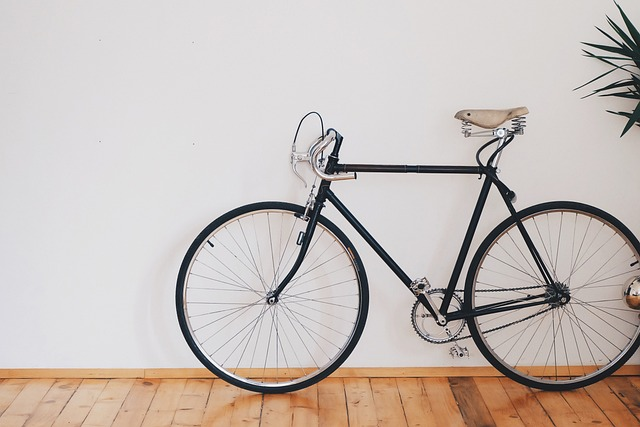

Ben Kimim?
Merhaba, ben Buse Nur ÖĞÜNŞEN. 6 Eylül 2002, Sakarya doğumluyum. 2 çocuklu ailenin büyük kızıyım. Aslen Boşnak göçmeniyim ancak şu an doğduğum şehir Sakarya’da ikamet ediyorum. İlk ve ortaokulu yaşadığım mahallede, liseyi Figen Sakallıoğlu Anadolu Lisesinde okudum; şu anda ise Sakarya Üniversitesinde bilgisayar mühendisliği bölümü 1. sınıf öğrencisiyim.
Çocukluğumdan beri birçok farklı branş ve spor dalı denedim. Ortaokula kadar lisanslı olarak yüzüyordum. Daha sonra ortaokulda masa tenisine başlamamla yüzmeyi bıraktım. Masa tenisinde okul takımıyla ve bireysel olarak dereceler kazandım. Yine ortaokulda kısa zamanlı olsa da karate ve futsalı denedim. Lisede masa tenisini profesyonel olarak yapmayı bırakmak zorunda kaldım, tenis ve reformerla ilgilendim. Bunlarla beraber ortaokulda okul korosunda yer aldım; keman ve bağlama dersleri aldım ve uzun süre keman çaldım.
Boş zamanlarımda gezmeyi, yeni şeyler tadıp yorumlamayı, alışveriş yapmayı seviyorum. Yalnız kaldığımda kitap okumak, puzzle yapmak, bir şeyler izlemek bana keyif veriyor. Voleybol oynamak, yürüyüş yapmak ve bisiklet sürmek de sevdiğim aktivitelerden birkaçı.
 
